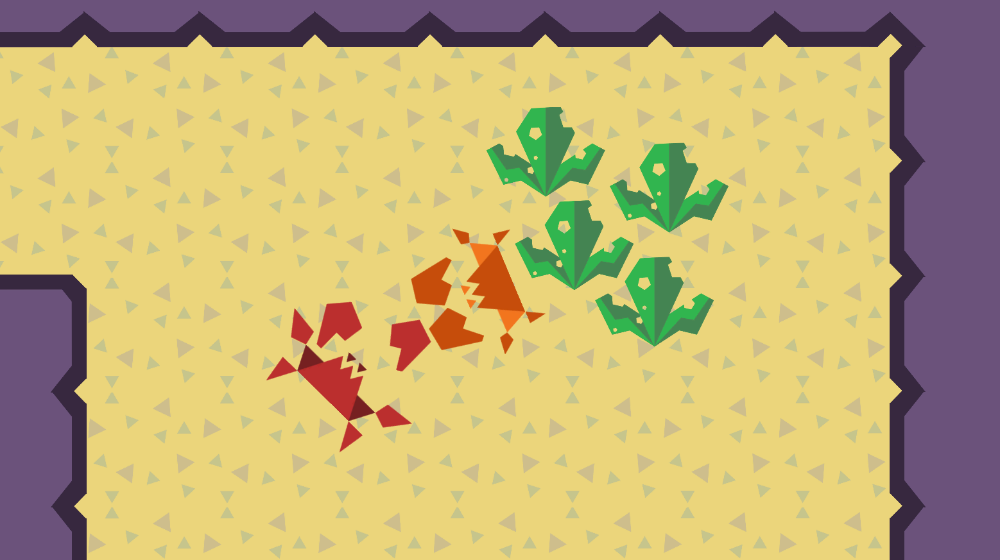
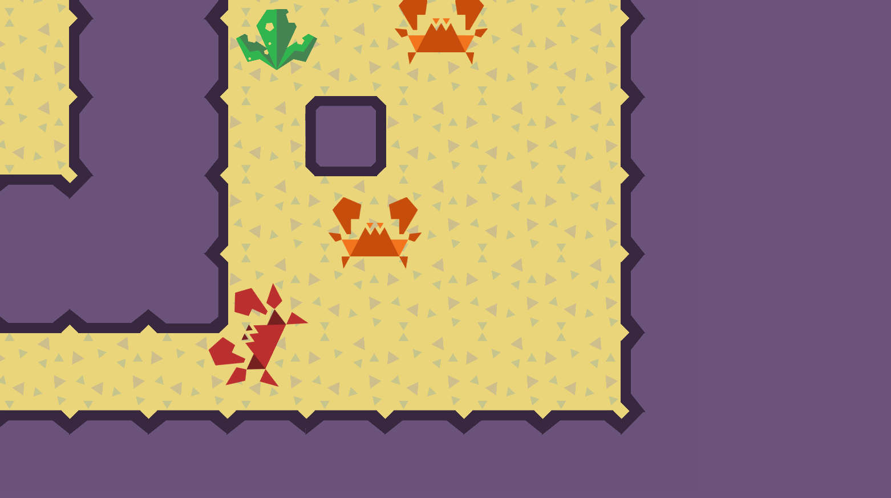
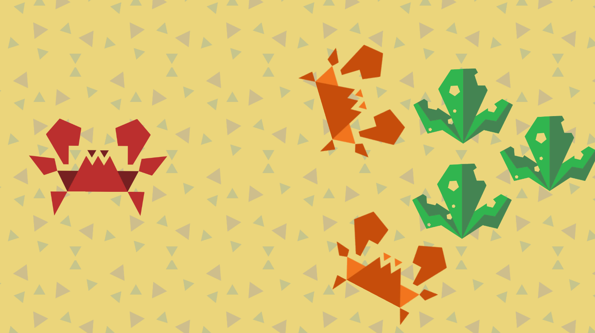

Algae Bandit is a game about being a rogue crab who has chosen to steal food from other crabs. As the player, you get to choose how you want to steal food from crabs, by either using stealth or beating up any crab in the way. This game was developed during the summer of 2020 and was part of the Game Dev Best Practices Workshop, which was hosted by the Game Dev Club at SJSU.
Mechanics
Moving
The player can use WASD to navigate the level. The movement mimics the
locomotion of crabs so sideways movement is faster and moving forwards
or backwards is slower.
Attacking
The player can attack using either the left or right arm of the crab.
J is tied to the left arm and K is for the right arm.
Blocking
If J and K are pressed, then the player can block any incoming attacks
coming from the front of the crab. Blocking doesn't protect the player
from the side or behind the crab. Blocking depletes stamina, which
regains slowly when not blocking. If there is no stamina, then the
player can not block.
Collecting
Throughout the level, there are algae that can be collected. To
collect algae, the player just needs to collide with the algae, which
will reduce the remaining algae in the level count.
Gameplay
The core gameplay loop of the game is collecting algae that is guarded by other crabs. The goal of the game is to collect all the algae in the level. The player can navigate to each algae but they must be tactical when thinking about how they will approach another crab. When the player approaches a crab, they must be careful to not expose their back because it’s defenseless. The player can block attacks in front of them but they have limited block stamina.
Level Design
I designed all the levels in the game. My design process started with creating some interesting pathways. I would create different layouts in Unity until I found one that could possibly create some unique challenges for the player. Once the layout was finished, I would try to predict the player’s pathway and create challenges along the way. If I felt that the pathways to each piece of algae was too easy, I would set more challenges for the player. Once done, I would test the level and repeat the process until I was happy with it.
Design Process
-
Set gameplay goal (What do I want to challenge the player with?).
Create interesting base layout.
Draw the pathway that the player will likely take.
-
Add crabs or make edits to layout to make pathway more interesting.
Test path way.
Repeat 2-4 until happy with whole level.
Concept and Design Decisions
The idea of the game was inspired by the Lybia edmondsoni crab, also known as the boxer crab. It is a small crab that has stinging sea anemone on its claws. The anemone resembles boxing gloves and it is quite humorous when the crab is fighting another fish or crab. The unconventional movement was based on the movement of the crab. This was a decision that took about a month of prototyping different ideas of movement. We were set on the crab-like movement earlier on but it took awhile to figure out how we should orientate the camera and make the controls as initiative as possible. Typically to move, games use arrow or WASD keys to move. Since we wanted the player to move left and right more than up and down, we decided to rotate the crab by 90 degrees. This allowed the players movement input to match the direction of the crab while also keeping the crab moving primary sideways.
